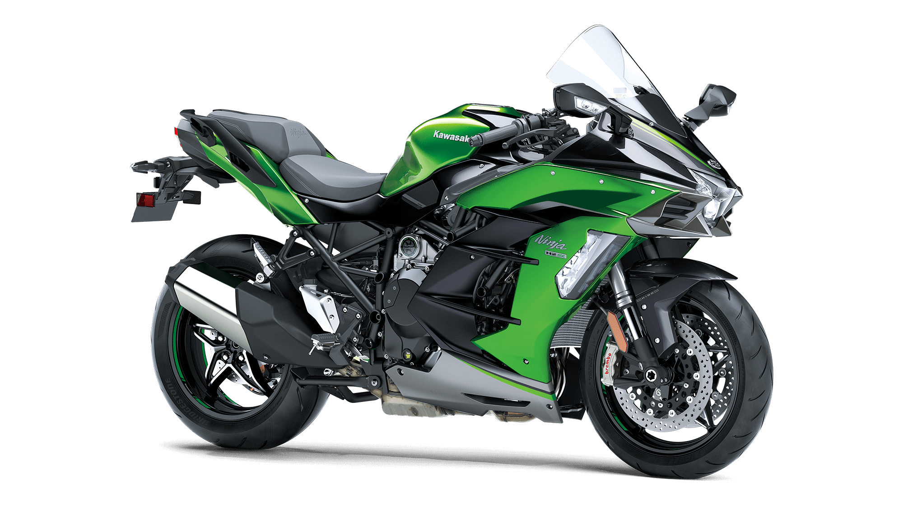

Introducing our new Kawasaki Ninja H2 SX, It comes with 998cc Four-cylinder supercharged engine, balanced supercharger, advanced electronics and Ample wind protection.
Click here Kawasakis Ninja H2™ SX models are where luxury and performance reach stunning new heights. The balanced supercharged engine was developed for everyday street-riding situations for relaxed long-distance riding, thrilling acceleration and superb fuel efficiency. Enjoy your exhilarating ride with premium features that make the supercharged bike stand apart as an icon of sport performance, luxury and style.